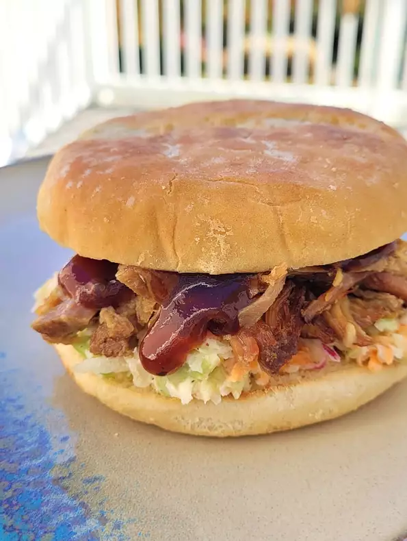

Description
This simple slow cooker pulled pork recipe is big hit with my family of picky eaters. For a spicy kick, mix 1 part Frank's® RedHot® Buffalo sauce and 1 part of your favorite mustard-based BBQ sauce. You can use a pork loin instead of pork shoulder, if desired. Combine with your favorite BBQ sauce and enjoy.
Ingredients
- 1 (4 pound) pork shoulder roast
- 2 tablespoons coarse kosher salt, or to taste
- 1 (12 fluid ounce) can or bottle root beer
- 1 (4 fluid ounce) bottle liquid smoke flavoring, or to taste
- 4 cloves garlic
Steps
- Place pork roast in a slow cooker, rub with salt, and pour root beer, liquid smoke, and garlic over the top.
- Cook on Low for 8 to 10 hours. Remove pork to a bowl. Strain liquid through a fine-mesh strainer; discard liquid or save for another use (see Editor's Note). Add garlic cloves back to to pork. Shred pork using two forks. Serve with your favorite BBQ sauce.